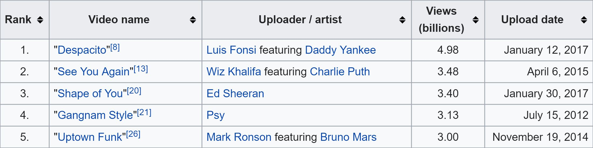
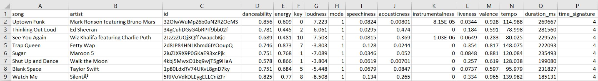
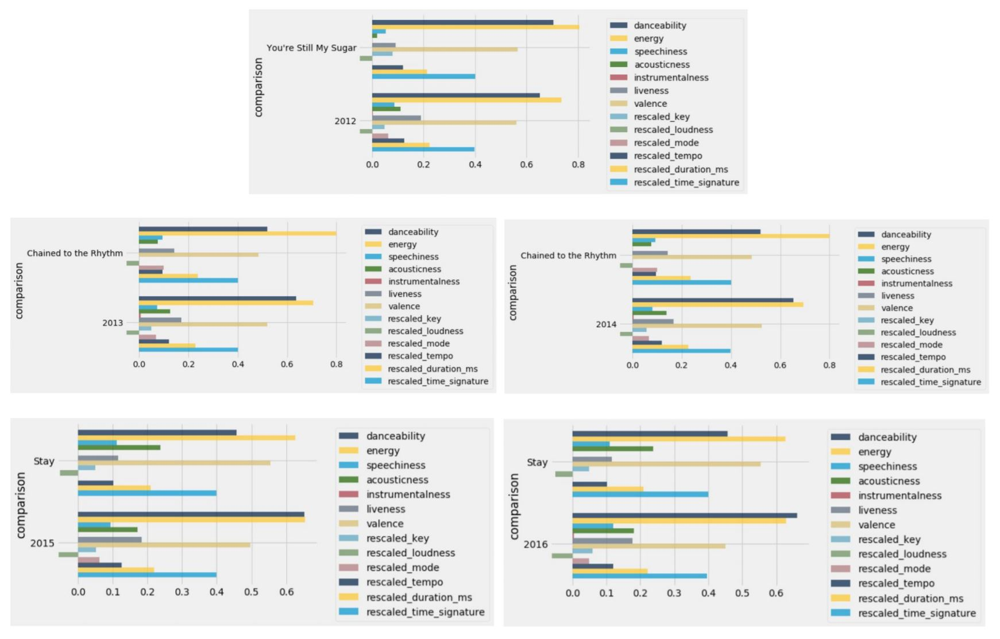

Spot-the-Future
Introduction
In 2012, South Korean pop artist Park Jae-sang, known professionally as Psy, released his hit single "Gangnam Style," which broke YouTube record by being the first music video to exceed one billion views.
With Korean pop song Gangnam Style being the first to break the one-billion mark, we began to wonder about the progression of music trends, especially considering only 80 million people speak Korean worldwide (5.3% of the world population) as compared to 1.5 billion people who speak English (20%). It is surprising that a strictly Korean sung song first broke one billion views, instead of an English sung song.
Since language didn’t hinder the prevalence of an unfamiliar culture from entering mainstream trends, what classifies a popular song? How have these characteristics changed over the course of?
A few classmates and I collected the top 100 songs from the years 2012 to 2016 that Billboard provided and used Spotify’s Web API to detail each song’s characteristics, such as danceability, energy, and tempo to compare how top song preferences have changed over the years.
Data Collection - Billboard and Spotify Web API
Every end of the year Billboard compiles the Hot 100 Songs, which consists of “the year’s most popular songs across all genres, ranked by radio airplay audience impressions as measured by Nielsen Music, sales data as compiled by Nielsen Music, and streaming activity data provided by online music sources” (Billboard).
Radio Airplay + Sales Data + Streaming Data = HOT 100 Songs
Using these compiled lists from the years 2012 to 2016, we generated a dictionary that associated song with its Spotify ID to allow tracking song features easier, because some songs had the same title so we couldn’t search for features by name.
Spotify detailed each song with 13 audio features: some numerical such as danceability and others categorical such as mode.
For more information about this library provided by Spotify, https://developer.spotify.com/web-api/get-audio-features/
We ended with 5 tables, each for a year, with 100 entries of the top 100 hot songs joined with all the 13 corresponding audio features provided by Spotify.
Visualizations
INTERACTIVE TIME SCALED SCATTER PLOT USING PYTHON - 2 columns of the song features data table (danceability and energy) are chosen to be the x- and y- axes of the graph. Then each of the 100 top songs is plotted depending on their respective feature. A dial can be switched to change the presented year. However, screenshots were captured instead to handle the lack of interactiveness. There is a slightly present trend that energy and danceability decreases as time progresses. Similar trends can be analyzed by changing the 2 features on the x- and y-axes.
To run the interactive time scaled scatter plot please download the cleandata folder then download and run the following ipynb file: Time_Segmented_Graph.ipynb
LINE GRAPH - The data present in the graph to the left is scaled on a range of 0 to 1. 0 being the least of the feature and 1 being the strongest of the feature. From each year, an average of the feature was calculated from the top 100 songs and plotted. However, with the features on the right, the data is scaled in an arbitrary way, so the data was standardized depending on each feature data from every year then put into a scale of 0 to 1. With this, trends are seen, as time goes on.
TABLEAU VISUALIZATIONS - The distribution of danceability follows a distribution that is like a normal distribution while energy level spreads out and does not show a clear pattern of distribution.
All top songs have low speechiness levels with a maximum of 0.453. This means that most top songs have more music content than speech content. Songs with values below 0.33 most likely represent music and other non-speech-like tracks. Interestingly, we observe songs with higher speech levels have high tempos as well. This is represented in red. One possible conclusion of this finding is that some songs especially rap songs with high speech content have faster tempos as well.
From this heat map, we observe that high valence (happy and cheerful) songs tend to have high energy. The correlation between valence and energy is positive.
For the interactive Tableau visualizations, visit Tableau Public .
Predictor
In the bar plot, the features of the predicted most popular song of 2017 are the top bars and the average features of the year used for comparison are the bottom bars, where each bar is the value of a feature. The data was rescaled such that all the features fit on a 0 to 1 scale. The bar plot shows how different the predicted song’s features are from the features of the comparison dataset. Using the 2012 dataset, “You’re Still My Sugar” was predicted as the most popular song. With 2013 and 2014, “Chained to the Rhythm” was the predicted song. With 2015 and 2016, “Stay” was the predicted song.
Shiny App
The Shiny app features two different word clouds and a k-means cluster plot. The first word cloud in the app takes in a selected year and feature and creates a word cloud where the largest songs have the largest values for that feature. In addition, the user can change the maximum number of songs plotted in the word cloud. The second word cloud in the app is similar to the first, except with different artwork and without the ability to change the maximum number of songs plotted. The k-means cluster plot allows the user to choose a year and two features, plot the songs as a scatter plot, and group the songs together by clusters. The app gives the ability to change the number of clusters from 1 to 9, in addition to the ability to hover over a point and retrieve the point’s song, artist, and feature values.
Visit the Shiny app at: https://joshasuncion.shinyapps.io/song_visualizer
Conclusion
As displayed from the visualizations, we found the energy of the top 100 Billboard songs goes down from 0.737 in 2012 to 0.628 in 2016, while danceability slightly increases from 0.651 to 0.662. In addition, we found that the loudness for the song decreases from 0.842 to 0.760. This implies that the trend for the more popular songs is changing to less energetic, but more danceable songs, which is peculiar because it would be assumed that the more energetic a song is, the more danceable it is. Almost all top songs have a 4/4 time signature.
We noticed that more top songs are in the minor key (about 50% now) implying that even though minor keys are sadder, they can represent positive songs such as “Happy” by Pharrell Williams. Pharrell’s song is in the minor key but has still gained much popularity.
Final Thoughts
One challenge that we faced: while we were collecting data, some tracks share same names with other songs by different artists and/or different versions. The code returned an error message because the API did not know which value to return. To resolve this, we found that Spotify assigns a unique ID to each track. Therefore, we decided to manually collect ID for each song by inserting an additional column and used ID to extract audio features.
Another challenge was we experienced some difficulties in deciding which visualizations to make and what tools to use because we didn’t have a clear question in mind. The whole project is based on curiosity and we learned by messing around with the data.
We had a lot of fun working on the project from collecting data to exploring different options and tools to make visualizations. Although we hit roadblocks when we first tried to use Facebook API to extract mutual friends’ data for our first project idea, we enjoyed the process of exploring other interesting options and coming up with this new idea. We used a variety of tools including Python, R, and Tableau to visualize our data and have found interesting patterns and trends that can be used to explain real world phenomenons about popular songs.